Candidate List 20261015Last night — ZTF: 3,313 passed basic cuts (71 young) · LSST: 0 passed basic cuts (0 young)Previous Day Next Day
Section 1: New Sources (age<1d) Section 2: Old (1-5d) sources observed last nightplaceholder
Section 1: New Afterglow/FBOT Cands Last Night (0)
Section 2: Older Sources Observed Last Night (12)
0. [ZTF] ZTF26acarmzm (Afterglow?FBOT?) [Back to Top] [Share] [Trigger Swift] [Fritz Alert] [Fritz Source] [Lasair]RA, Dec: 356.59294, 52.02564 23h46m22.31s, 52d 1m32.31sGalactic (l, b): 112.86583, -9.56986 ext(g-r) = 0.204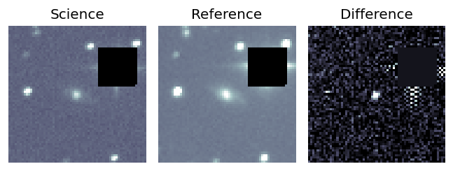
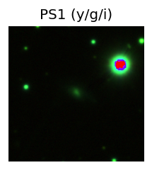
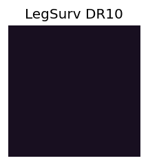
TESS: Sectors [17 24 57 84]
PS1: 1 source in 3 arcsec Closest: d = 0.38 arcsec photoz=0.12+/-0.04 peak abs mag = -19.81
LegacySurvey: 0 sources in 3 arcsec
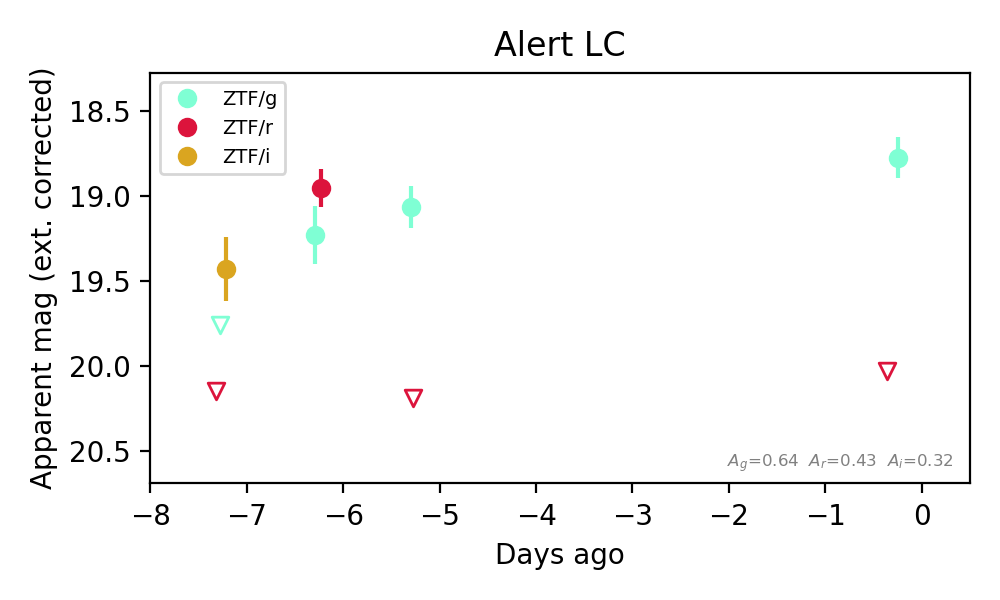
Extinction-corrected gr color:
From alerts: -1.25 +/- 99 mag
Extinction-corrected gi color:
From alerts: 0.33 +/- 99 mag
Extinction-corrected ri color:
From alerts: 0.72 +/- 99 mag
Rise Rate:
g: 0.54 mag/day
r: 1.1 mag/day
i: 0.02 mag/day
Fade Rate:
r: 1.3 mag/day
1. [ZTF] ZTF26acbcrar (FBOT?) [Back to Top] [Share] [Trigger Swift] [Fritz Alert] [Fritz Source] [Lasair]RA, Dec: 270.07631, 48.33718 18h 0m18.31s, 48d20m13.85sGalactic (l, b): 75.61329, 28.13521 ext(g-r) = 0.046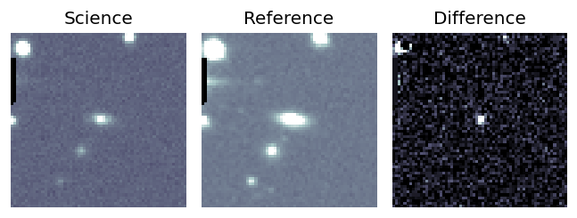
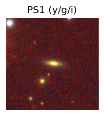
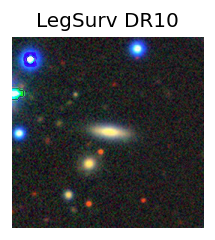
TESS: Sectors [ 14 25 40 53 54 74 79 80 81 85 117 118]
SDSS (<15 kpc):Found SDSS phot-z: z=0.09; peak abs mag = -19.58
PS1: 0 sources in 3 arcsec
LegacySurvey: 1 sources in 3 arcsec Closest: d = 0.62 arcsec, 274.1 deg (east of north) photoz=0.09 (68% bounds 0.07, 0.11), type=SER peak abs mag (ext. corrected) = -19.68 (68% bounds -19.0, -20.12)
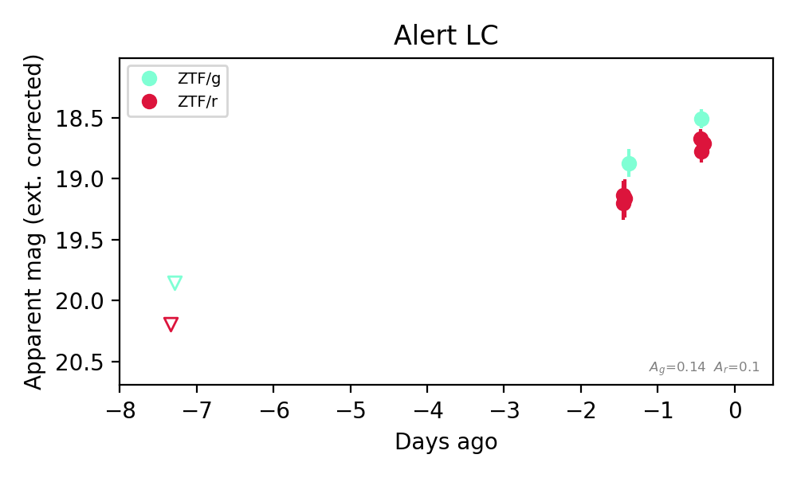
Extinction-corrected gr color:
From alerts: -0.21 +/- 0.09 mag
Rise Rate:
g: 0.38 mag/day
r: 0.09 mag/day
Fade Rate:
2. [ZTF] ZTF26acbeaim (FBOT?) [Back to Top] [Share] [Trigger Swift] [Fritz Alert] [Fritz Source] [Lasair]RA, Dec: 28.78218, 27.16669 1h55m7.72s, 27d10m0.07sGalactic (l, b): 139.9695, -33.58913 ext(g-r) = 0.078


TESS: Sectors [17 85]
SDSS (<15 kpc):Found SDSS phot-z: z=0.23; peak abs mag = -21.05
PS1: 0 sources in 3 arcsec
LegacySurvey: 1 sources in 3 arcsec Closest: d = 0.59 arcsec, 202.2 deg (east of north) photoz=0.36 (68% bounds 0.13, 1.14), type=EXP peak abs mag (ext. corrected) = -22.12 (68% bounds -19.69, -25.17)

Extinction-corrected gr color:
From alerts: -0.29 +/- 0.19 mag
Extinction-corrected gi color:
From alerts: -0.44 +/- 0.19 mag
Extinction-corrected ri color:
From alerts: -0.14 +/- 0.2 mag
Consistent with synchrotron, g-r>0!
Rise Rate:
g: 0.21 mag/day
r: 0.15 mag/day
i: 0.12 mag/day
Fade Rate:
3. [ZTF] ZTF26acbcwfj (Afterglow?) [Back to Top] [Share] [Trigger Swift] [Fritz Alert] [Fritz Source] [Lasair]RA, Dec: 275.75206, 43.55015 18h23m0.49s, 43d33m0.55sGalactic (l, b): 71.44276, 23.20228 ext(g-r) = 0.055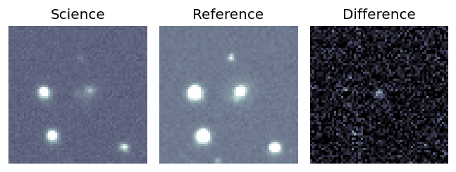
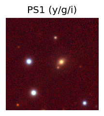
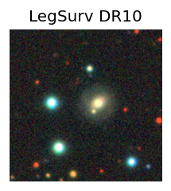
TESS: Sectors [ 14 26 40 52 53 54 74 79 80 81 118 119]
PS1: 0 sources in 3 arcsec
LegacySurvey: 1 sources in 3 arcsec Closest: d = 3.21 arcsec, 6.4 deg (east of north) photoz=0.06 (68% bounds 0.03, 0.24), type=EXP peak abs mag (ext. corrected) = -17.82 (68% bounds -15.78, -20.92)
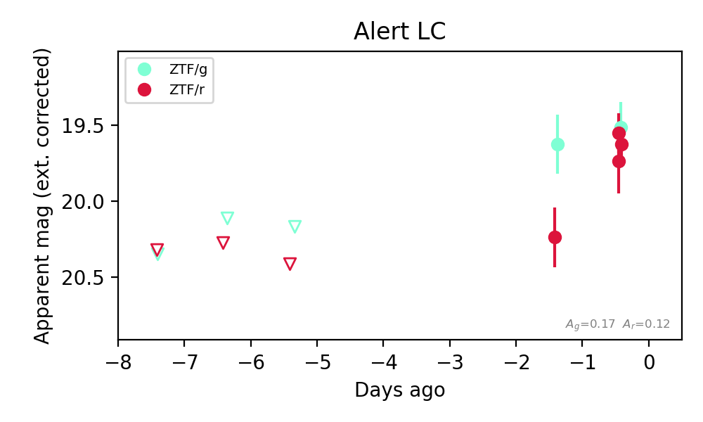
Extinction-corrected gr color:
From alerts: -0.1 +/- 0.19 mag
Consistent with synchrotron, g-r>0!
Rise Rate:
g: 0.14 mag/day
r: 0.63 mag/day
Fade Rate:
4. [ZTF] ZTF26acbcymh (Afterglow?) [Back to Top] [Share] [Trigger Swift] [Fritz Alert] [Fritz Source] [Lasair]RA, Dec: 347.89852, 7.73573 23h11m35.65s, 7d44m8.63sGalactic (l, b): 84.629, -47.57313 ext(g-r) = 0.12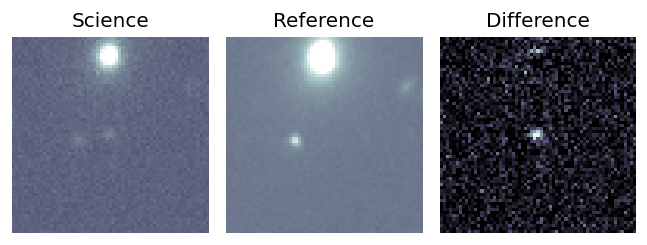
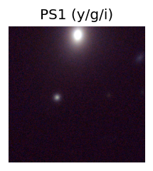
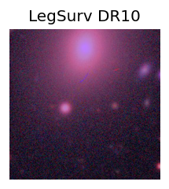
TESS: Sectors [42 56 83 92]
SDSS (<15 kpc):Found SDSS phot-z: z=0.09; peak abs mag = -19.71
PS1: 0 sources in 3 arcsec
LegacySurvey: 1 sources in 3 arcsec Closest: d = 3.77 arcsec, 236.1 deg (east of north) photoz=0.46 (68% bounds 0.27, 0.89), type=REX peak abs mag (ext. corrected) = -23.65 (68% bounds -22.31, -25.39)
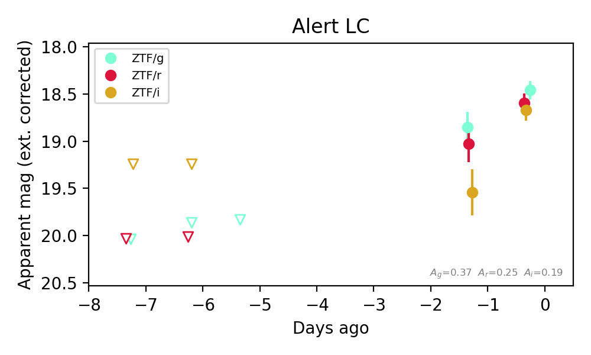
Extinction-corrected gr color:
From alerts: -0.13 +/- 0.14 mag
Extinction-corrected gi color:
From alerts: -0.21 +/- 0.14 mag
Extinction-corrected ri color:
From alerts: -0.08 +/- 0.15 mag
Consistent with synchrotron, g-r>0!
Rise Rate:
g: 0.36 mag/day
r: 0.24 mag/day
i: 0.92 mag/day
Fade Rate:
5. [ZTF] ZTF26acbepnu (FBOT?) [Back to Top] [Share] [Trigger Swift] [Fritz Alert] [Fritz Source] [Lasair]RA, Dec: 62.29446, -5.99462 4h 9m10.67s, -5d-59m-40.62sGalactic (l, b): 197.9656, -38.55198 ext(g-r) = 0.078


TESS: Sectors [ 5 32 109 110]
SDSS (<15 kpc):Found SDSS phot-z: z=0.42; peak abs mag = -23.06
NED host (10 arcsec):Found WISEA J040910.54-055947.0 (G, 6.7″); NED spec-z: z=0.0382 [zflag SLS]; peak abs mag = -17.41
PS1: 0 sources in 3 arcsec
LegacySurvey: 1 sources in 3 arcsec Closest: d = 0.35 arcsec, 113.4 deg (east of north) photoz=0.05 (68% bounds 0.01, 0.23), type=EXP peak abs mag (ext. corrected) = -18.06 (68% bounds -14.82, -21.56)

Extinction-corrected gi color:
From alerts: -0.23 +/- 0.15 mag
Rise Rate:
g: 0.24 mag/day
i: 0.13 mag/day
Fade Rate:
6. [ZTF] ZTF26acbeqap (Afterglow?) [Back to Top] [Share] [Trigger Swift] [Fritz Alert] [Fritz Source] [Lasair]RA, Dec: 53.14977, 5.21176 3h32m35.94s, 5d12m42.33sGalactic (l, b): 179.37168, -39.39303 ext(g-r) = 0.178


TESS: Sectors [ 31 109]
SDSS (<15 kpc):Found SDSS phot-z: z=0.04; peak abs mag = -18.29
PS1: 0 sources in 3 arcsec
LegacySurvey: 0 sources in 3 arcsec

Extinction-corrected gr color:
From alerts: 0.13 +/- 0.35 mag
Extinction-corrected gi color:
From alerts: -0.76 +/- 0.18 mag
Consistent with synchrotron, g-r>0!
Rise Rate:
g: 0.57 mag/day
i: 0.41 mag/day
Fade Rate:
7. [ZTF] ZTF26acbezdh (Afterglow?) [Back to Top] [Share] [Trigger Swift] [Fritz Alert] [Fritz Source] [Lasair]RA, Dec: 42.17134, 14.30627 2h48m41.12s, 14d18m22.58sGalactic (l, b): 161.02304, -39.73958 WARNING: -1.84 deg from ecliptic plane ext(g-r) = 0.111


TESS: Sectors [42 43 44 70 71]
PS1: 0 sources in 3 arcsec
LegacySurvey: 1 sources in 3 arcsec Closest: d = 6.35 arcsec, 92.7 deg (east of north) photoz=0.02 (68% bounds 0.01, 0.05), type=REX peak abs mag (ext. corrected) = -15.51 (68% bounds -14.13, -17.77)

Extinction-corrected gr color:
From alerts: 0.11 +/- 0.17 mag
Extinction-corrected gi color:
From alerts: -0.24 +/- 0.23 mag
Extinction-corrected ri color:
From alerts: -0.35 +/- 0.23 mag
Consistent with synchrotron, g-r>0!
Rise Rate:
g: 1.14 mag/day
r: 0.65 mag/day
i: 0.06 mag/day
Fade Rate:
8. [ZTF] ZTF26acbihrg (FBOT?) [Back to Top] [Share] [Trigger Swift] [Fritz Alert] [Fritz Source] [Lasair]RA, Dec: 12.60589, 37.6953 0h50m25.41s, 37d41m43.07sGalactic (l, b): 122.71021, -25.17601 ext(g-r) = 0.057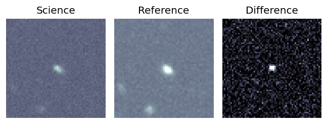
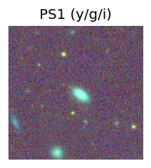

TESS: Sectors [17 57 84]
SDSS (<15 kpc):Found SDSS phot-z: z=0.17; peak abs mag = -20.22
PS1: 1 source in 3 arcsec Closest: d = 2.30 arcsec photoz=0.12+/-0.02 peak abs mag = -19.49
LegacySurvey: 0 sources in 3 arcsec
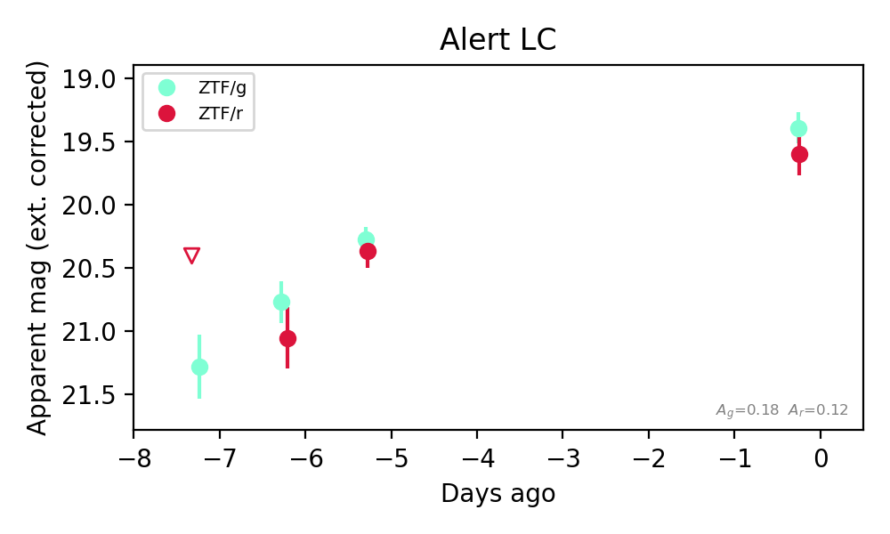
Extinction-corrected gr color:
From alerts: -0.21 +/- 0.21 mag
Consistent with synchrotron, g-r>0!
Rise Rate:
g: 0.21 mag/day
r: 0.18 mag/day
Fade Rate:
9. [ZTF] ZTF26acbkxsu (Afterglow?FBOT?) [Back to Top] [Share] [Trigger Swift] [Fritz Alert] [Fritz Source] [Lasair]RA, Dec: 135.79737, 7.63812 9h 3m11.37s, 7d38m17.23sGalactic (l, b): 221.64223, 32.69908 ext(g-r) = 0.053


TESS: Sectors [ 8 34 44 45 46 61 72 88]
SDSS (<15 kpc):Found SDSS phot-z: z=0.71; peak abs mag = -22.59
PS1: 0 sources in 3 arcsec
LegacySurvey: 1 sources in 3 arcsec Closest: d = 0.56 arcsec, 172.6 deg (east of north) photoz=0.56 (68% bounds 0.46, 0.76), type=SER peak abs mag (ext. corrected) = -21.97 (68% bounds -21.47, -22.77)


Extinction-corrected gr color:
From alerts: 0.21 +/- 0.33 mag
Consistent with synchrotron, g-r>0!
Rise Rate:
r: 0.59 mag/day
Fade Rate:
10. [ZTF] ZTF26acbkykq (Afterglow?FBOT?) [Back to Top] [Share] [Trigger Swift] [Fritz Alert] [Fritz Source] [Lasair]RA, Dec: 143.50792, 21.98702 9h34m1.90s, 21d59m13.25sGalactic (l, b): 208.23713, 45.09718 ext(g-r) = 0.026Coincident trigger: Fermi/GBM GRB261013582 (r=15.4 deg, sep 6.3 deg = 0.41 r; 0.91 d before first detection)Trigger time(s) marked on the light curve; error circles in the localization panel.


TESS: Sectors [21 45 46 48 72]
SDSS (<15 kpc):Found SDSS phot-z: z=0.54; peak abs mag = -21.42
PS1: 0 sources in 3 arcsec
LegacySurvey: 1 sources in 3 arcsec Closest: d = 0.40 arcsec, 236.1 deg (east of north) photoz=0.41 (68% bounds 0.36, 0.46), type=REX peak abs mag (ext. corrected) = -20.74 (68% bounds -20.38, -21.04)


Extinction-corrected gr color:
From alerts: 0.03 +/- 0.29 mag
Consistent with synchrotron, g-r>0!
Rise Rate:
r: 0.88 mag/day
Fade Rate:
11. [ZTF] ZTF26acblfkg (FBOT?) [Back to Top] [Share] [Trigger Swift] [Fritz Alert] [Fritz Source] [Lasair]RA, Dec: 132.95154, 14.05525 8h51m48.37s, 14d 3m18.91sGalactic (l, b): 213.31702, 32.92984 WARNING: -3.42 deg from ecliptic plane ext(g-r) = 0.034


TESS: Sectors [44 45 46 72]
PS1: 0 sources in 3 arcsec
LegacySurvey: 1 sources in 3 arcsec Closest: d = 0.12 arcsec, 336.3 deg (east of north) photoz=1.19 (68% bounds 0.91, 1.46), type=REX peak abs mag (ext. corrected) = -23.83 (68% bounds -23.11, -24.38)


Extinction-corrected gr color:
From alerts: -0.35 +/- 99 mag
Extinction-corrected ri color:
From alerts: 0.54 +/- 99 mag
Rise Rate:
r: 0.55 mag/day
Fade Rate: